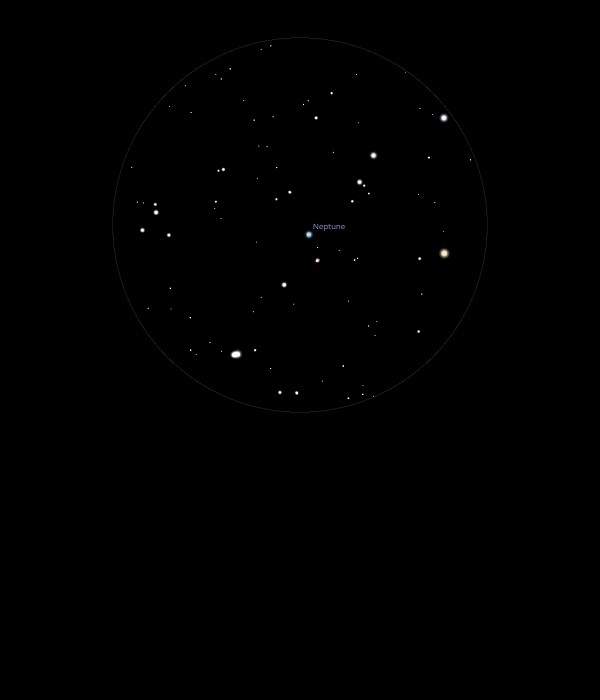

Neptune
Eighth planet from the Sun
Fourth largest planet by diameter in the Solar System
Ice Giant
26/09/13
Sharp and clear in 12mm at Mag 7.6
Very white
Triton may just be just visible when telescope stops wobbling!
Tried in 7mm but so bouncy that not very clear
02/10/15
Easy to locate and identify since it does not twinkle
Viewed in 25mm, 18mm and 12mm and using Barlow with 18mm and
12mm
Higher magnifications do not help, probably the best view in
18mm where there is just the hint of a disk, but no colour to it
21/09/16
Low down through the haze so only an indistinct blob which
appears only slightly round, even in 12mm and no hint of the
blue colour but just an off white